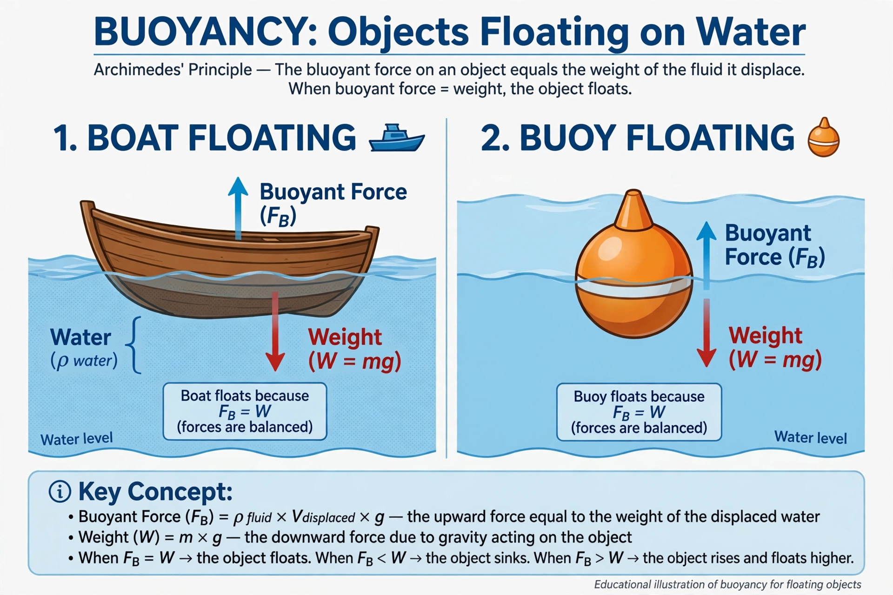

 A buoy floats because buoyant force balances its weight | |
| Governing principle | Archimedes' principle |
|---|---|
| Formula | Fb = ρ · V · g |
| Related concepts | Density, fluid pressure, flotation |
Buoyancy (/ˈbɔɪənsi, ˈbuːjənsi/) is an upward force exerted by a fluid that opposes the weight of a partially or fully immersed object. In a column of fluid, pressure increases with depth as a result of the weight of the overlying fluid; thus the pressure at the bottom of a column of fluid is greater than at the top, producing a net upward force on objects within it.
Archimedes' principle states that the upward buoyant force exerted on a body immersed in a fluid, whether fully or partially submerged, is equal to the weight of the fluid that the body displaces. For a floating object, the buoyant force equals the object's weight, and the object displaces a volume of fluid whose weight equals its own. An object whose average density is less than that of the fluid will float; one with greater density will sink; and one with equal density is neutrally buoyant and remains suspended.
The buoyant force acts through the centre of buoyancy, the centroid of the displaced volume. The stability of a floating body depends on the relative positions of its centre of gravity and centre of buoyancy, and on the metacentre: a floating body is stable if, when tilted, the buoyant force creates a righting moment that restores it to equilibrium. Naval architects use these principles — metacentric height in particular — to design ships that float upright.
Archimedes of Syracuse (c. 287–212 BCE) formulated the principle in his treatise On Floating Bodies. The famous anecdote of his "Eureka!" moment — realizing, while bathing, how to test whether a crown was pure gold by measuring displaced water — was recounted by Vitruvius, though its details are likely embellished.